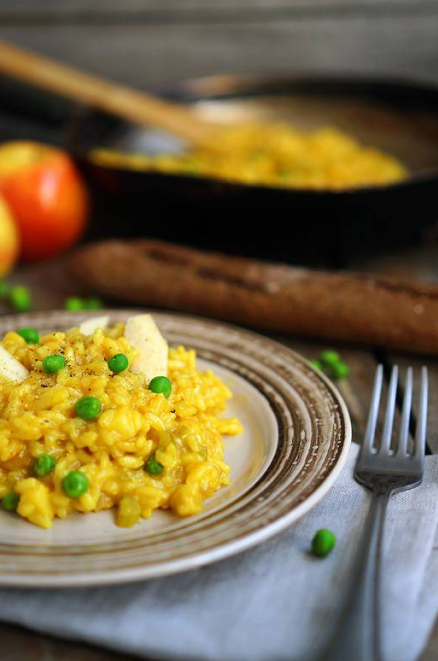

🥘 Ризотто на тыквенном бульонини с яблоками
📋 Ингредиенты
- Сельдерей — 1 веточка
- Лук красный (сладкий) — 1 шт.
- Чеснок — 3 зубчика
- Оливковое масло — 50 мл (≈3 ст. л.)
- Бульон (тыквенный, овощной или куриный) — 1,5 л
- Рис Carnaroli — 200 г
- Яблоко — 1 крупное (очищенное)
- Горошек зелёный (свежий или замороженный) — 50 г
- Сливочное масло — 30 г
- Пармезан тёртый — 100 г
- Соль, перец — по вкусу
- Белое сухое вино (опционально) — 50 мл
👩🍳 Приготовление
- Подготовьте овощи. Мелко нарежьте сельдерей, лук и чеснок. Лук здесь берём сладкий (красный) — ризотто будет с нежной сладостью.
- Обжарьте базу. На сковороде (или в сотейнике) разогрейте оливковое масло. Выложите сельдерей, лук и чеснок, обжаривайте 3–4 минуты до прозрачности.
- Добавьте рис. Всыпьте рис Carnaroli (только специальные сорта для ризотто!). Обжаривайте 2 минуты, постоянно помешивая, пока рис не станет полупрозрачным.
- Если используете вино — влейте его сейчас, перемешайте и дайте выпариться (примерно 1 минуту).
- Начните подливать бульон. Бульон должен быть горячим. Вливайте по одному половнику (≈100–150 мл), постоянно помешивая. Когда жидкость почти полностью впитается, вливайте следующий половник. Весь процесс займёт 25–30 минут.
- Через 15 минут от начала добавления бульона добавьте нарезанное кубиками яблоко и горошек. Продолжайте подливать бульон и мешать.
- Проверьте готовность. Минут через 25 попробуйте рис: он должен быть мягким снаружи, но с лёгким твёрдым центром (al dente). Важно не переварить в кашу.
- Финиш. Выключите огонь. Добавьте сливочное масло и тёртый пармезан. Энергично перемешайте — масса станет кремистой, воздушной. Если ризотто кажется слишком густым, добавьте ложку бульона.
- Подача. Разложите по тёплым тарелкам. Сверху можно посыпать ещё пармезаном и украсить листиками тимьяна или петрушки. Подавайте немедленно, с бокалом белого вина.
Это ризотто получается нежно-сладким, с тыквенным послевкусием. Уверена, вам тоже понравится! 🍷🍎
